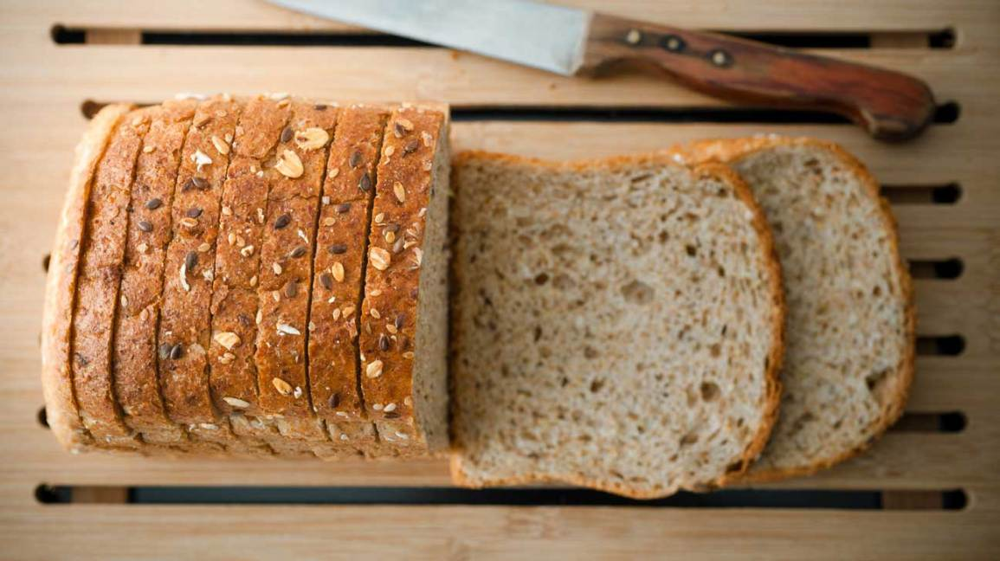
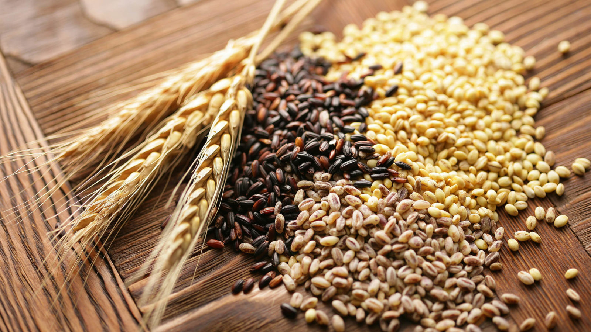
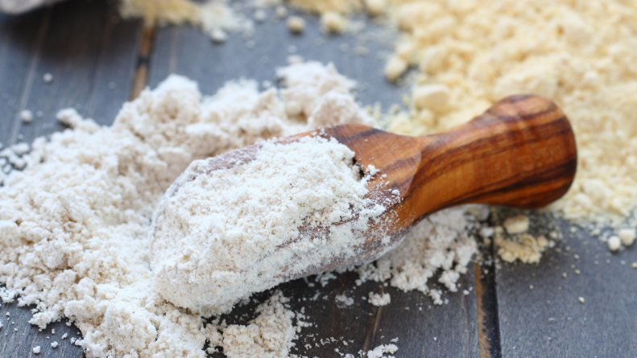

<ion-header>
  <ion-toolbar>
    <ion-buttons slot="start">
      <ion-menu-button></ion-menu-button>
    </ion-buttons>
    <ion-title>Home</ion-title>
    <!-- <ion-buttons large slot="end"> <ion-icon name="search-outline"    (click)="search()"></ion-icon> <ion-icon name="cart"   (click)="cart()"></ion-icon>    </ion-buttons> -->
 </ion-toolbar>
</ion-header>


<ion-content >
  <ion-slides pager class="tutorial-page">
    <ion-slide *ngFor="let slide of slides">
      
    </ion-slide>
  </ion-slides>
    <ion-card  class="card-background-page" class="ima">
        

    </ion-card>

      <ion-card  class="card-background-page">
          
      </ion-card>

    <ion-card  class="card-background-page">
        
    </ion-card>
    <ion-card  class="card-background-page">
        
    </ion-card>


</ion-content>
